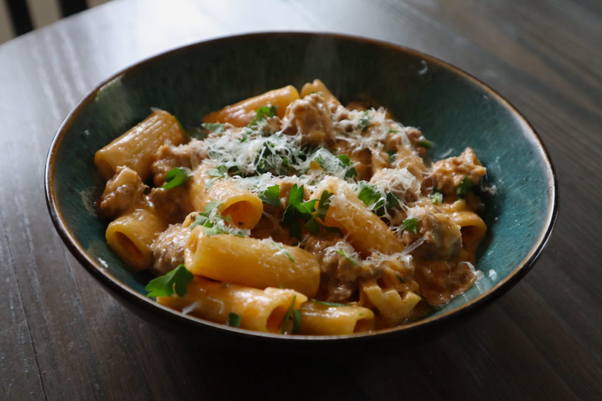

Rigatoni Fennel

This is a wonderful winter dish to make with loved ones.
Ingredients
- 1 box of rigatoni
- 1 pound of ground turkey meat
- 2 14.5oz cans of italian stewed tomatos
- 1 bunch of fresh italian parsley
- 1 medium red onion
- red pepper flakes
- Heat the olive oil in a large heavy pot or Dutch oven, such as Le Creuset, over medium heat. Add the fennel and onion and saute for 7 minutes, stirring occasionally, until tender. Add the sausage and cook for 7 to 8 minutes, crumbling it with a fork, until nicely browned. Add the garlic, crushed fennel seeds, red pepper flakes, 2 teaspoons salt, and 1 teaspoon black pepper and cook for one minute. Pour in the wine, bring to a boil, and add the heavy cream, half-and-half, and tomato paste. Bring back to a boil, lower the heat, and simmer for 20 minutes, until the sauce has thickened.
- Meanwhile, bring a large pot of water to a boil, add 2 tablespoons salt, and cook the rigatoni according to the directions on the package. Drain and add to the sauce, stirring to coat the pasta. Cook over low heat for 5 minutes to allow the pasta to absorb the sauce. Off the heat, stir in the parsley and 1/2 cup of the Parmesan. Serve hot in shallow bowls with the remaining 1/2 cup Parmesan on the side.